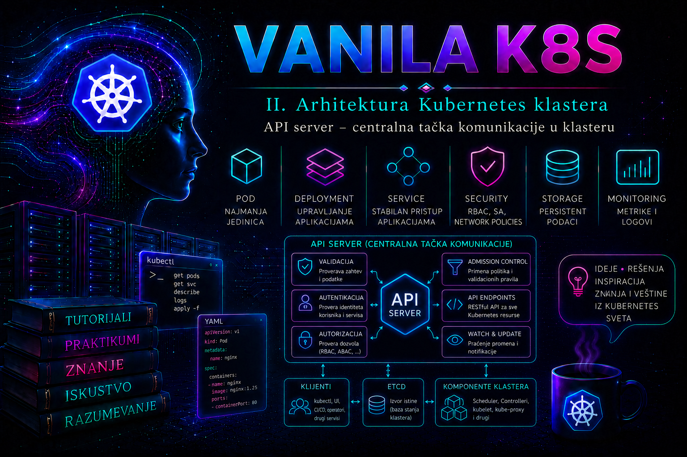

Vanilla Kubernetes

Kubernetes API server, odnosno proces kube-apiserver, predstavlja centralnu komunikacionu i bezbednosnu tačku Kubernetes klastera. Gotovo svaka administrativna ili automatska operacija prolazi kroz njega: komanda koju administrator izvrši pomoću alata kubectl, zahtev koji šalje operator, očitavanje stanja koje obavlja kontroler, prijava statusa sa kubelet servisa i promena koju inicira scheduler. Ostale komponente ne menjaju stanje klastera neposrednim upisivanjem u etcd. One zahtevaju, čitaju i posmatraju objekte preko Kubernetes API-ja, dok API server validira zahtev i jedini obavlja kontrolisanu komunikaciju sa skladištem stanja.
Zbog takvog položaja API server nije samo REST servis. On je istovremeno ulazna tačka, mehanizam za proveru identiteta, izvršilac pravila autorizacije, domaćin admission kontrolera, sloj za validaciju i verzionisanje objekata, izvor događaja za kontrolere i mesto na kojem se može evidentirati ko je, kada i nad kojim objektom izvršio određenu radnju. Njegova dostupnost, performanse i bezbednost neposredno određuju da li klaster može da prima promene i da li njegove kontrolne petlje mogu pravilno da rade.
Uloga API servera u arhitekturi klastera
Kada administrator izvrši komandu kubectl apply, alat najpre čita kubeconfig, bira odgovarajući cluster, korisnički identitet i context, a zatim uspostavlja TLS vezu sa adresom API servera. U HA klasteru ta adresa obično pripada kontrolnoj DNS tački ili load balanceru koji zahtev prosleđuje jednom od zdravih API servera. Zahtev sadrži metod, putanju API resursa, zaglavlja, kredencijal i, kada je reč o kreiranju ili promeni objekta, telo zahteva u JSON formatu.
API server zatim sprovodi više faza obrade. Najpre određuje identitet podnosioca zahteva. Posle uspešne autentifikacije proverava da li taj identitet sme da izvrši traženu operaciju. Nad zahtevima koji su prošli autorizaciju izvršavaju se odgovarajući admission kontroleri. Mutating admission može dopuniti ili izmeniti objekat, dok validating admission može odbiti objekat koji ne ispunjava propisana pravila. Tek nakon uspešne validacije i admission obrade trajno stanje objekta može biti upisano u etcd.
Odgovor se vraća klijentu kao Kubernetes API objekat ili strukturirana greška sa HTTP statusom i Kubernetes poljima reason, message i code. Na primer, neuspešna autentifikacija obično dovodi do odgovora 401 Unauthorized, dok pravilno identifikovan korisnik bez potrebnog prava dobija 403 Forbidden. Zahtev za nepostojeći objekat vraća 404 Not Found, konflikt verzije objekta može vratiti 409 Conflict, a semantički neispravan manifest najčešće završava kao 422 Unprocessable Entity.
Kubernetes API grupe, resursi i verzije
Kubernetes objekti organizovani su u API grupe. Osnovni resursi, kao što su Pod, Service, Namespace, ConfigMap i Secret, pripadaju takozvanoj core grupi i dostupni su preko putanje /api/v1. Resursi iz imenovanih grupa koriste putanju /apis/<grupa>/<verzija>. Deployment se, na primer, koristi preko grupe apps i verzije v1, pa mu odgovara putanja /apis/apps/v1.
Verzija navedena u manifestu ne predstavlja nužno format u kojem je objekat trajno sačuvan. API server može podržavati više spoljašnjih verzija istog resursa i pretvarati ih u internu reprezentaciju, a zatim u storage verziju pre upisa u etcd. Zato uklanjanje zastarele API verzije pri nadogradnji može prekinuti stare manifeste, operatore i automatizaciju čak i kada postojeći objekti nastave da rade. Administrator pre nadogradnje mora proveriti koje verzije API-ja klijenti koriste, a ne samo koje su vrste objekata trenutno prisutne.
Dostupni resursi mogu se otkriti komandama kubectl api-resources i kubectl api-versions. Prva prikazuje naziv resursa, skraćeni naziv, API grupu, da li je resurs namespaced i vrstu objekta. Druga prikazuje API grupe i verzije koje trenutni API server izlaže. Ove komande treba koristiti umesto pretpostavke da klaster podržava određenu verziju samo zato što je ona postojala u drugom okruženju.
kubectl api-resources
kubectl api-resources --api-group=apps
kubectl api-versions
kubectl explain deployment.spec.strategy
Komanda kubectl explain koristi OpenAPI šemu koju objavljuje API server. Ona omogućava proveru strukture i značenja polja bez oslanjanja na manifest preuzet iz nepoznatog ili zastarelog izvora. Ipak, ona ne zamenjuje proveru admission politika, kvota i organizacionih pravila koja mogu dodatno ograničiti objekat.
Putanja jednog API zahteva
Obrada zahteva može se posmatrati kao kontrolni lanac. Greška u bilo kojoj fazi prekida zahtev pre trajne promene stanja:
- Transport i TLS. Klijent mora da dosegne API endpoint, uspostavi TLS sesiju i verifikuje serverski sertifikat pomoću odgovarajućeg CA sertifikata. Problemi sa DNS-om, load balancerom, firewall pravilima, isteklim sertifikatom ili pogrešnim SAN vrednostima nastaju pre Kubernetes autentifikacije.
- Autentifikacija. API server utvrđuje korisničko ime i grupe na osnovu klijentskog sertifikata, bearer tokena, service account tokena, OIDC identiteta, autentifikacionog proxy-ja ili drugog konfigurisanog mehanizma. Kubernetes nema ugrađenu bazu klasičnih korisničkih naloga sa lozinkama.
- Autorizacija. Identifikovanom korisniku proverava se dozvola za glagol, resurs, namespace i, kada je primenljivo, konkretan naziv objekta ili non-resource URL. Uobičajen produkcioni mehanizam je RBAC.
- Mutating admission. Aktivni ugrađeni ili webhook admission kontroleri mogu dopuniti zahtev, na primer dodavanjem podrazumevanih vrednosti ili organizacionih oznaka. Mutating faza prethodi validating fazi; pojedini kontroleri mogu imati i mutirajuće i validaciono ponašanje.
- Validating admission. Validaciona pravila proveravaju da li je objekat prihvatljiv. Ovde mogu reagovati ugrađeni kontroleri, ValidatingAdmissionPolicy i eksterni admission webhook servisi.
- Validacija, konverzija i upis. API server proverava šemu i semantiku objekta, izvršava potrebnu konverziju i komunicira sa etcd skladištem.
- Odgovor i obaveštavanje posmatrača. Klijent dobija odgovor, dok kontroleri koji koriste watch mehanizam mogu dobiti događaj o novoj verziji resursa.
Ovaj redosled je važan za troubleshooting. Poruka o nepoznatom sertifikacionom autoritetu nije RBAC problem. Odgovor Forbidden potvrđuje da je zahtev stigao do API servera i da je identitet prepoznat, ali da autorizacija nije uspela. Odbijanje objekta porukom admission webhook-a znači da su autentifikacija i autorizacija već prošle.
Autentifikacija i identitet klijenta
API server ne prima samo zahteve ljudi. Njegovi klijenti su kubelet, scheduler, controller manager, kube-proxy, operatori, CI/CD sistemi i aplikacije koje koriste Kubernetes API. Svakom klijentu treba dodeliti identitet prikladan njegovoj ulozi. Deljenje administratorskog kubeconfig fajla između ljudi i automatizacije uklanja mogućnost pouzdanog audita, povećava posledice kompromitovanja i praktično onemogućava primenu principa najmanjih privilegija.
Za procese unutar Podova koriste se service account identiteti. Savremeni Kubernetes koristi kratkotrajne, projektovane i vezane service account tokene. Dugotrajni statički tokeni u Secret objektima ne treba da budu podrazumevani način integracije. Kada spoljašnji sistem mora da pristupa API-ju, prednost imaju odgovarajuća autentifikacija organizacionim identitetom, kontrolisani OIDC pristup ili kratkotrajni namenski tokeni, u zavisnosti od arhitekture i podržanih integracija.
Administrator može proveriti identitet kojim trenutni kubeconfig pristupa serveru pomoću detaljnog prikaza context-a, ali ne treba ispisivati tajne u tiket ili dokumentaciju. Komanda kubectl config view --minify podrazumevano rediguje osetljive podatke. Opciju --raw treba izbegavati u deljenom terminalu, snimljenoj sesiji ili izlazu koji će biti arhiviran.
kubectl config current-context
kubectl config view --minify
kubectl cluster-infoAutorizacija i RBAC
RBAC odluka zavisi od identiteta, grupa, operacije i ciljnog resursa. Role važi u jednom namespace-u, dok ClusterRole može sadržati pravila za resurse na nivou klastera ili se vezati unutar pojedinačnog namespace-a. RoleBinding dodeljuje prava u svom namespace-u, a ClusterRoleBinding ih dodeljuje na nivou celog klastera. Česta greška je korišćenje ClusterRoleBinding objekta kada je aplikaciji potreban pristup samo jednom namespace-u.
Glagoli RBAC sistema nisu proizvoljni. Operacije nad resursima uključuju, između ostalog, get, list, watch, create, update, patch i delete. Dozvola get za pojedinačni Pod ne omogućava listanje Podova. Operator koji održava keš obično zahteva list i watch, dok alat za jednokratno očitavanje možda zahteva samo get ili list.
Pre dodele privilegija administrator treba da koristi kubectl auth can-i. Ova provera može simulirati drugog identiteta samo ako trenutni korisnik ima pravo impersonacije ili odgovarajuća administratorska prava. Rezultat yes potvrđuje odluku autorizatora za konkretan upit, ali ne potvrđuje da će admission politika prihvatiti objekat niti da je mrežna putanja aplikacije funkcionalna.
kubectl auth can-i list pods -n api-lab
kubectl auth can-i create deployments.apps -n api-lab
kubectl auth can-i --list -n api-labAdmission kontrola i validacija objekata
Autorizacija odgovara na pitanje da li identitet sme da pokuša određenu operaciju. Admission kontrola proverava da li je konkretan zahtev dozvoljen prema pravilima klastera. Korisnik može imati RBAC pravo da kreira Pod, ali zahtev ipak može biti odbijen zbog ResourceQuota ograničenja, Pod Security standarda, neispravne image politike, nedostupnog admission webhook-a ili organizacione ValidatingAdmissionPolicy politike.
Admission kontroleri presreću zahteve koji kreiraju, menjaju ili brišu objekte, kao i pojedine posebne operacije, ali ne presreću obične read zahteve get, list i watch. Zaštita čitanja zato se prvenstveno sprovodi autentikacijom, autorizacijom i pažljivim RBAC pravilima. Ovo je naročito važno za Secret objekte: admission politika nije zamena za ograničavanje prava njihovog čitanja.
Mutating webhook može izmeniti objekat pre čuvanja, dok validating webhook samo prihvata ili odbija rezultat. Spoljni webhook uvodi mrežnu i aplikativnu zavisnost u kritičnu putanju API zahteva. Pogrešno postavljen failurePolicy, nedostupan servis, neispravan CA bundle ili preširoko pravilo podudaranja može blokirati kreiranje velikog broja objekata, uključujući objekte potrebne za oporavak samog webhook-a.
U produkciji admission promene moraju imati plan testiranja, precizno ograničen opseg, izuzetke za sistemske komponente kada su opravdani i unapred definisan postupak oporavka. Pre aktiviranja politike treba izvršiti server-side dry run. Dry run prolazi kroz većinu obrade zahteva, uključujući autorizaciju i admission kontrolu, ali ne upisuje objekat u trajno stanje.
kubectl apply --server-side --dry-run=server -f manifest.yaml
kubectl diff -f manifest.yamlWatch mehanizam, resourceVersion i konkurentne promene
Kontroleri ne šalju neprekidno kompletne upite samo da bi proverili da li se nešto promenilo. Oni obično prvo izlistaju objekte, zapamte njihovu vrednost resourceVersion, a zatim otvore watch tok. API server kroz taj tok šalje događaje o dodavanju, promeni i uklanjanju objekata. Time se omogućava efikasno reagovanje kontrolnih petlji na promene.
Polje resourceVersion takođe sprečava tiho prepisivanje novije promene zastarelim stanjem. Ako dva klijenta istovremeno čitaju objekat, a zatim oba pokušaju da ga izmene, drugi zahtev može dobiti konflikt jer više ne polazi od aktuelne verzije. Ispravno ponašanje automatizacije je ponovno čitanje objekta, izračunavanje željene promene i kontrolisani retry. Slepo ponavljanje celog zastarelog objekta može ukloniti izmene drugog administratora ili kontrolera.
Prekid watch veze sam po sebi nije dokaz kvara klastera. Klijentske biblioteke treba da obnove list/watch ciklus. Međutim, veliki broj neuspešnih watch zahteva, česte greške 410 Gone, rast latencije i preopterećenje etcd-a mogu ukazivati na spore klijente, prevelik broj posmatrača ili nedovoljno dimenzionisan control plane.
Dostupnost, HA topologija i mrežna putanja
U kubeadm klasteru API server se najčešće izvršava kao static Pod na svakom control plane čvoru. Njegov manifest se nalazi u direktorijumu /etc/kubernetes/manifests, a lokalni kubelet prati taj direktorijum i održava komponentu. Ručno menjanje manifesta aktivnog control plane čvora može izazvati trenutno ponovno kreiranje API server Pod-a. Zato se takva promena ne radi bez validne rezervne control plane instance, proverenog etcd stanja, kopije konfiguracije i dokumentovanog rollback-a.
Produkcioni HA klaster koristi više control plane čvorova i stabilan control plane endpoint. Load balancer prosleđuje TCP saobraćaj zdravim instancama na podrazumevanom portu 6443. DNS naziv endpoint-a mora biti obuhvaćen SAN poljima serverskog sertifikata. Load balancer ne rešava kvar etcd-a, loše sertifikate niti preopterećenje svih API servera; on samo uklanja zavisnost klijenata od jedne IP adrese i raspoređuje saobraćaj na dostupne instance.
API server izlaže endpoint-e /livez i /readyz. Liveness pokazuje da li proces treba smatrati živim, dok readiness pokazuje da li je spreman da prima saobraćaj. Zastareli endpoint /healthz ne treba koristiti za nove integracije. Za load balancer je TCP provera jednostavna, ali detaljnija interna dijagnostika zahteva readiness proveru i razumevanje pojedinačnih rezultata.
kubectl get --raw='/livez?verbose'
kubectl get --raw='/readyz?verbose'
Uspešan rezultat završava porukom ok, dok detaljan izlaz prikazuje pojedinačne provere. Neuspešna etcd readiness provera znači da proces API servera može biti pokrenut, ali da nije sposoban da pouzdano obrađuje zahteve koji zahtevaju skladište stanja.
Performanse, ograničavanje zahteva i API Priority and Fairness
API server mora da obrađuje zahteve sistemskih komponenti, administratora i aplikacija sa različitim prioritetom. Nekontrolisan klijent koji agresivno listuje sve resurse, otvara veliki broj watch konekcija ili ponavlja neuspešne zahteve bez backoff-a može povećati latenciju celog klastera. Posledice nisu ograničene na spor kubectl; controller manager, scheduler i operatori takođe zavise od istog API-ja.
API Priority and Fairness klasifikuje dolazne zahteve i raspoređuje ograničeni kapacitet tako da važni tokovi ne budu lako potisnuti preopterećenjem manje važnih klijenata. Promena FlowSchema i PriorityLevelConfiguration objekata zahteva oprez, jer pogrešna klasifikacija može ugroziti sistemske zahteve. Administrator najpre treba da identifikuje izvor opterećenja preko metrika i audit podataka, optimizuje klijenta i tek zatim razmatra promenu pravila kontrole toka.
Klijenti treba da koriste informere i list/watch obrasce umesto učestalog polling-a, da primenjuju eksponencijalni backoff i da poštuju odgovore kao što je 429 Too Many Requests. Povećavanje resursa control plane-a može biti potrebno, ali nije zamena za ispravljanje neefikasne automatizacije.
Logovi, audit i monitoring
U kubeadm okruženju stdout i stderr static Pod-a preuzima container runtime. API server logovi mogu se čitati pomoću kubectl logs dok je API funkcionalan, ili lokalnim alatima kao što je crictl kada API nije dostupan. Kubelet log se na systemd sistemima proverava komandom journalctl -u kubelet. On je posebno važan kada static Pod nije napravljen, manifest je neispravan ili container runtime ne uspeva da pokrene komponentu.
kubectl -n kube-system get pods -l component=kube-apiserver -o wide
kubectl -n kube-system logs kube-apiserver-cp01 --tail=100
sudo crictl ps -a --name kube-apiserver
sudo journalctl -u kubelet --since "-15 min"
Audit log nije isto što i procesni log. Procesni log objašnjava rad komponente, greške povezivanja, TLS probleme i interne neuspehe. Audit evidencija beleži bezbednosno relevantne API aktivnosti korisnika, aplikacija i control plane komponenti prema definisanoj audit politici. Nivo Metadata beleži identitet i osnovne podatke bez tela zahteva i odgovora, dok viši nivoi mogu beležiti i sadržaj. Preširoka politika može povećati potrošnju diska, opteretiti API server i zabeležiti osetljive podatke.
Audit se ne smatra aktivnim samo zato što je klaster pokrenut. Moraju biti konfigurisani audit policy i odgovarajući backend, na primer log fajl ili webhook. Administrator mora proveriti rotaciju, zaštitu pristupa, centralno prikupljanje, vremensku sinhronizaciju, period čuvanja i mogućnost pretraživanja zapisa prema korisniku, glagolu, namespace-u, resursu i rezultatu.
Za monitoring su naročito važni broj i trajanje API zahteva, raspodela HTTP statusa, zahtevi u toku, latencija prema etcd-u, odbijanja kontrole toka, stanje work queue mehanizama i dostupnost API endpoint-a. Alert ne treba zasnivati na jednom prolaznom sporom zahtevu, već na održivom pogoršanju SLI pokazatelja i uticaju na sistemske klijente.
Najčešći kvarovi i način njihovog razlikovanja
| Simptom | Verovatni sloj problema | Prva provera |
|---|---|---|
| Timeout ili connection refused | DNS, routing, firewall, load balancer ili ugašen proces | Razrešavanje endpoint-a, TCP pristup portu 6443 i stanje static Pod-a |
| x509 greška | TLS poverenje, istekao sertifikat, SAN ili vreme sistema | Sertifikacioni lanac, datum isteka, korišćeni hostname i NTP |
| 401 Unauthorized | Nedostaje ili nije prihvaćen kredencijal | Aktivni context, autentifikacioni mehanizam i važnost tokena ili sertifikata |
| 403 Forbidden | RBAC ili drugi autorizator | kubectl auth can-i za isti identitet, glagol i resurs |
| Admission webhook timeout | Webhook servis, DNS, TLS ili pogrešan failurePolicy | Webhook konfiguracija, endpoints, mrežna dostupnost i CA bundle |
| readyz nije uspešan, livez jeste | Proces radi, ali zavisnost ili interna provera nije spremna | /readyz?verbose, etcd i API server log |
| 429 Too Many Requests | API Priority and Fairness ili preveliko opterećenje | Izvor zahteva, APF metrike, retry ponašanje klijenta i latencija |
| 409 Conflict | Konkurentna promena i zastareo resourceVersion | Ponovno čitanje objekta i kontrolisani retry |
Integrisani praktikum – bezbedan API pristup servisnog naloga za monitoring
Poslovni i tehnički kontekst. Tim uvodi interni monitoring proces koji treba da očitava Podove, Deployment objekte i događaje isključivo u namespace-u api-lab. Proces ne sme da kreira, menja ili briše resurse niti da pristupa drugim namespace-ovima. Administrator treba da napravi namenski service account, primeni least-privilege RBAC, potvrdi API dostupnost, izvrši pozitivan i negativan test i prikupi dokaze za evidenciju promene.
Referentno okruženje. Kubeadm klaster ima control plane čvor cp01, worker čvorove worker01 i worker02 i stabilan endpoint https://k8s-api.lab.example:6443. Administratorska radna stanica već poseduje funkcionalan kubeconfig. Koriste se namespace api-lab, service account api-observer, Role api-observer, RoleBinding api-observer i test Deployment web-demo.
Cilj. Omogućiti servisnom identitetu samo operacije get, list i watch nad Podovima, Deployment objektima, ReplicaSet objektima i Events resursima u namespace-u api-lab, bez prava izmene i bez pristupa drugim namespace-ovima.
Preduslovi i prava. Administrator mora imati pravo da čita API discovery podatke, kreira Namespace, ServiceAccount, Role, RoleBinding i test workload, kao i pravo da izda kratkotrajni token za service account. Za čitanje API server logova potreban je pristup namespace-u kube-system; za lokalni crictl i systemd log potreban je privilegovani pristup čvoru cp01. Direktna izmena API server manifesta nije deo ovog praktikuma.
-
Proveriti aktivni context, endpoint i osnovnu dostupnost API-ja.
Pre bilo kakve promene administrator mora potvrditi da radi u očekivanom klasteru. Naziv context-a sam po sebi nije dovoljan; proveravaju se i serverski endpoint i health rezultati.
Validacija: kubeconfig treba da prikazuje endpointkubectl config current-context kubectl config view --minify kubectl cluster-info kubectl get --raw='/livez?verbose' kubectl get --raw='/readyz?verbose'https://k8s-api.lab.example:6443. Pozivilivezireadyztreba da završe rezultatomok. Ako readiness nije uspešan, promena se odlaže dok se ne utvrdi koja pojedinačna provera pada. -
Proveriti podržane resurse i administratorska prava.
Time se potvrđuje da API server izlaže potrebne grupe i da trenutni identitet zaista može da napravi planirane objekte.
Validacija: Deployment i ReplicaSet moraju biti dostupni u grupikubectl api-resources --api-group=apps kubectl api-resources | grep -E '^(pods|events|serviceaccounts|roles|rolebindings)' kubectl auth can-i create namespaces kubectl auth can-i create serviceaccounts -n api-lab kubectl auth can-i create roles.rbac.authorization.k8s.io -n api-lab kubectl auth can-i create rolebindings.rbac.authorization.k8s.io -n api-labapps, a sve četiri provere prava moraju vratitiyes. Provera namespaced prava može vratitiyesi pre nego što namespace postoji, jer ispituje autorizacionu odluku, a ne postojanje objekta. -
Napraviti jedinstven manifest za namespace, test aplikaciju i RBAC.
Fajl se kreira lokalno kao
api-observer-lab.yaml. Role namerno ne sadrži Secret, ConfigMap, log podresurs niti glagole izmene.cat > api-observer-lab.yaml <<'EOF'apiVersion: v1 kind: Namespace metadata: name: api-lab labels: purpose: api-server-training --- apiVersion: v1 kind: ServiceAccount metadata: name: api-observer namespace: api-lab automountServiceAccountToken: false --- apiVersion: apps/v1 kind: Deployment metadata: name: web-demo namespace: api-lab labels: app: web-demo spec: replicas: 2 selector: matchLabels: app: web-demo template: metadata: labels: app: web-demo spec: containers: - name: web image: nginx:1.27-alpine ports: - name: http containerPort: 80 resources: requests: cpu: 25m memory: 32Mi limits: cpu: 100m memory: 64Mi --- apiVersion: rbac.authorization.k8s.io/v1 kind: Role metadata: name: api-observer namespace: api-lab rules: - apiGroups: - "" resources: - pods - events verbs: - get - list - watch - apiGroups: - apps resources: - deployments - replicasets verbs: - get - list - watch --- apiVersion: rbac.authorization.k8s.io/v1 kind: RoleBinding metadata: name: api-observer namespace: api-lab subjects: - kind: ServiceAccount name: api-observer namespace: api-lab roleRef: apiGroup: rbac.authorization.k8s.io kind: Role name: api-observer
Validacija: klijentska i serverska validacija moraju proći pre upisa. Serverski dry run je važan jer uključuje pravila aktivnog API servera i admission sloja.EOF
Očekuje se da dry run prikaže objekte bez greške.kubectl apply --dry-run=client -f api-observer-lab.yaml kubectl apply --server-side --dry-run=server -f api-observer-lab.yaml kubectl diff -f api-observer-lab.yamlkubectl diffmože završiti kodom 1 kada postoji razlika; to označava pronađenu razliku, a ne nužno tehnički kvar. -
Primeniti manifest i proveriti svaki tip objekta.
Tek nakon uspešnog dry run-a sadržaj se upisuje preko API servera.
Validacija: svi RBAC objekti moraju postojati, rollout mora završiti porukom da je Deployment uspešno dostupan, a dva Pod-a treba da imaju stanjekubectl apply -f api-observer-lab.yaml kubectl get namespace api-lab kubectl -n api-lab get serviceaccount api-observer kubectl -n api-lab get role api-observer kubectl -n api-lab get rolebinding api-observer kubectl -n api-lab rollout status deployment/web-demo --timeout=120s kubectl -n api-lab get pods -l app=web-demo -o wideRunningi readiness1/1. Ako image nije dostupan, RBAC promena može biti ispravna, ali test workload nije funkcionalan; problem se razlikuje proverom Pod događaja. -
Simulirati autorizaciju service account identiteta.
Standardno korisničko ime service account-a ima oblik
system:serviceaccount:<namespace>:<naziv>.
Validacija: prve dve komande moraju vratitikubectl auth can-i list pods \ --as=system:serviceaccount:api-lab:api-observer \ -n api-lab kubectl auth can-i watch deployments.apps \ --as=system:serviceaccount:api-lab:api-observer \ -n api-lab kubectl auth can-i create pods \ --as=system:serviceaccount:api-lab:api-observer \ -n api-lab kubectl auth can-i list pods \ --as=system:serviceaccount:api-lab:api-observer \ -n kube-systemyes, a poslednje dveno. Ako simulacija vrati grešku da trenutni administrator ne sme da impersonira identitet, test treba izvršiti kratkotrajnim tokenom u sledećem koraku, a ne dodeljivanjem nepotrebnog impersonation prava. -
Izdati kratkotrajni token i izvršiti stvarni API zahtev.
Token se čuva samo u promenljivoj trenutne shell sesije. Ne upisuje se u manifest, Git repozitorijum, tiket ili history fajl. Komanda zahteva podršku TokenRequest API-ja.
Validacija: odgovor mora biti JSON objekat vrsteAPI_SERVER="https://k8s-api.lab.example:6443" CA_FILE="$(mktemp)" TOKEN="$(kubectl -n api-lab create token api-observer --duration=10m)" kubectl config view --raw \ -o jsonpath='{.clusters[?(@.name=="'$(kubectl config view --minify -o jsonpath='{.contexts[0].context.cluster}')'")].cluster.certificate-authority-data}' \ | base64 -d > "${CA_FILE}" curl --silent --show-error --fail \ --cacert "${CA_FILE}" \ --header "Authorization: Bearer ${TOKEN}" \ "${API_SERVER}/api/v1/namespaces/api-lab/pods"PodListi sadržati Podove aplikacijeweb-demo. Ne koristi se opcijacurl -k, jer bi ona onemogućila proveru identiteta servera i prikrila problem sa CA lancem ili hostname-om. -
Izvršiti stvarni negativni test.
Isti token pokušava da kreira ConfigMap, za šta Role nema dozvolu. Zahtev mora biti odbijen pre upisa objekta.
Validacija: očekivani HTTP status jeHTTP_CODE="$(curl --silent --output api-negative-response.json \ --write-out '%{http_code}' \ --cacert "${CA_FILE}" \ --header "Authorization: Bearer ${TOKEN}" \ --header "Content-Type: application/json" \ --request POST \ --data '{"apiVersion":"v1","kind":"ConfigMap","metadata":{"name":"forbidden-test"},"data":{"result":"must-not-be-created"}}' \ "${API_SERVER}/api/v1/namespaces/api-lab/configmaps")" printf 'HTTP status: %s\n' "${HTTP_CODE}" cat api-negative-response.json kubectl -n api-lab get configmap forbidden-test403, odgovor treba da sadrži razlogForbidden, a završna komanda mora potvrditi da ConfigMap ne postoji. Status401bi ukazivao na problem autentifikacije ili tokena, a ne na očekivano RBAC odbijanje. -
Proveriti API server i audit trag.
Najpre se utvrđuje stvarni naziv API server Pod-a, a zatim se čitaju skoriji procesni logovi. Audit lokacija zavisi od konfiguracije klastera i proverava se u static Pod manifestu bez njegovog menjanja.
Validacija: procesni log ne treba da pokazuje ponavljane etcd, TLS ili admission greške. Ako je konfigurisankubectl -n kube-system get pods -l component=kube-apiserver -o wide kubectl -n kube-system logs kube-apiserver-cp01 --since=10m sudo grep -E -- \ '--audit-policy-file|--audit-log-path|--audit-webhook-config-file' \ /etc/kubernetes/manifests/kube-apiserver.yaml--audit-log-path, u odgovarajućem audit fajlu treba potražiti identitetsystem:serviceaccount:api-lab:api-observer, operacijelisticreatei odgovarajuće statusne kodove. Ako audit parametri ne postoje, to se dokumentuje kao nalaz; ne treba tvrditi da je negativni test auditovan samo na osnovu procesnog loga. -
Proveriti stanje API-ja nakon testa i ukloniti kratkotrajne lokalne podatke.
Test ne sme da ostavi token ili CA kopiju u privremenom direktorijumu duže nego što je potrebno.
Validacija: readiness mora ostati uspešan, test aplikacija treba da bude dostupna, privremeni fajlovi uklonjeni, a token promenljiva prazna. Kratkotrajni token će svakako isteći, ali njegovo odmah uklanjanje smanjuje mogućnost slučajnog izlaganja.kubectl get --raw='/readyz?verbose' kubectl -n api-lab get deployment,pods rm -f "${CA_FILE}" api-negative-response.json unset TOKEN API_SERVER CA_FILE HTTP_CODE
Merljivi kriterijumi prihvatanja.
- API endpoint
k8s-api.lab.example:6443prolazi TLS proveru i/readyzvraća uspešan rezultat. - Deployment
web-demoima dve dostupne replike u namespace-uapi-lab. - Service account može da izvrši
get,listiwatchnad odobrenim resursima uapi-lab. - Pokušaj kreiranja ConfigMap objekta vraća HTTP 403 i objekat nije upisan.
- Listanje Podova u
kube-systemnije dozvoljeno servisnom identitetu. - Nema novih ponavljanih TLS, etcd ili admission grešaka u API server logu tokom testa.
- Privremeni token i lokalni fajlovi nisu sačuvani u repozitorijumu, shell promenljivama ili dokumentaciji.
Rollback i cleanup. Ako je scenario bio samo laboratorijski test, svi napravljeni Kubernetes objekti mogu se ukloniti brisanjem namespace-a. Brisanje namespace-a uklanja test aplikaciju, service account i namespaced RBAC objekte, pa se ne izvršava u deljenom ili produkcionom namespace-u.
Upozorenje: sledeća komanda je destruktivna za sve objekte u namespace-u api-lab. Pre izvršenja treba potvrditi da namespace nije preuzet za drugu namenu.
kubectl get all,serviceaccount,role,rolebinding -n api-lab
kubectl delete namespace api-lab
kubectl wait --for=delete namespace/api-lab --timeout=120s
rm -f api-observer-lab.yamlAko se pristup uvodi kao trajna produkciona funkcija, namespace i RBAC objekti se ne brišu. Umesto toga manifest se čuva u kontrolisanom repozitorijumu infrastrukture, evidentira se vlasnik servisnog identiteta, poslovna svrha, datum odobrenja, period revizije prava i postupak opoziva.
Administratorske prakse
- Praćenje dostupnosti API endpoint-a. Spoljašnja provera treba da prati DNS, TCP vezu, TLS validnost i kontrolisani API zahtev, dok interna provera koristi
/livezi/readyz. Provera se izvršava kontinuirano, sa više mrežnih lokacija kada je to moguće. Reakciju zahtevaju održiva nedostupnost, neuspešan readiness ili značajno povećanje latencije. Prvi korak je određivanje da li je problem ispred load balancera, na pojedinačnoj API instanci ili u etcd zavisnosti. Incident se dokumentuje u sistemu za događaje sa vremenom početka, pogođenim endpoint-om, statusnim kodovima i oporavkom. Uspešnost se meri dostupnošću API SLI-ja i vremenom detekcije i oporavka. - Praćenje latencije i grešaka zahteva. Prometheus ili drugi kompatibilan monitoring prikuplja API server metrike i prati trajanje zahteva, statusne kodove, broj zahteva u toku i APF odbijanja. Pregled se radi kontinuirano, a trendovi najmanje nedeljno i nakon nadogradnje, instalacije operatora ili većeg povećanja broja objekata. Održivi rast grešaka 5xx, odgovora 429 ili visokih percentila latencije zahteva identifikaciju korisničkog agenta, resursa i glagola. Nalaz se unosi u operativni izveštaj i vezuje za promenu koja je prethodila odstupanju.
- Redovna revizija RBAC prava. Za ljude, service account-e i automatizaciju proveravaju se RoleBinding i ClusterRoleBinding veze, privilegovani glagoli, pristup Secret objektima i mogućnost eskalacije prava. Revizija se obavlja najmanje kvartalno, pri promeni uloge zaposlenog, prestanku projekta i promeni vlasnika aplikacije. Neočekivani
cluster-admin, wildcard pravila ili ClusterRoleBinding za namespaced potrebu zahtevaju privremenu procenu uticaja i planirano sužavanje prava. Dokumentuju se vlasnik, svrha, odobravalac, datum revizije i uklonjene privilegije. Uspeh se meri procentom identiteta sa potvrđenim vlasnikom i smanjenjem neiskorišćenih privilegija. - Kontrola admission zavisnosti. Za svaki ValidatingWebhookConfiguration i MutatingWebhookConfiguration prate se servis, endpoints, TLS CA bundle, timeout, failurePolicy, pravila podudaranja i namespace selektori. Provera se radi posle instalacije ili nadogradnje operatora i periodično u produkciji. Ponavljani timeout-i, nedostupan servis ili webhook koji obuhvata sistemske resurse bez jasne potrebe zahtevaju hitnu analizu. Prva reakcija je procena da li je bezbednije obnoviti webhook servis ili kontrolisano ograničiti zahvaćeni opseg; nasumično brisanje webhook konfiguracije može ukloniti zaštitnu politiku. Dokumentuju se vlasnik, runbook, izuzeci i rollback.
- Audit evidencija. Proveravaju se aktivna audit politika, backend, rotacija, popunjenost diska, centralna isporuka i mogućnost pretraživanja bezbednosnih događaja. Tehnička ispravnost se proverava svakodnevno automatizovanim health signalom, a probni upit najmanje mesečno. Izostanak zapisa za kontrolisanu test operaciju, kašnjenje isporuke ili nekontrolisan rast fajla zahteva reakciju. Prvo se čuva postojeće stanje i proveravaju backend i dozvole, bez restartovanja svih API servera istovremeno. Uspeh se meri potpunim prijemom test događaja i vremenom potrebnim da se pronađe konkretna operacija.
- Sertifikati i vreme sistema. Prate se rokovi važenja API server, klijentskih i CA sertifikata, kao i NTP sinhronizacija svih control plane čvorova. Provera se automatizuje i upozorenje se postavlja dovoljno rano da ostane vreme za kontrolisanu obnovu. U kubeadm okruženju stanje se može proveravati podržanim kubeadm komandama odgovarajuće verzije i alatima za inspekciju sertifikata. Odstupanje vremena ili približavanje isteka zahteva plan promene, proveru HA kapaciteta i test klijentskog pristupa nakon obnove. Evidentiraju se serijski broj, period važenja, obuhvaćeni SAN nazivi i rezultat post-change validacije.
- Backup i oporavak control plane stanja. API server je stateless u odnosu na trajno stanje, pa njegov backup bez etcd podataka nije dovoljan. Čuvaju se redovni etcd snapshot-i, PKI materijal, kubeadm konfiguracija, static Pod manifesti, audit politika, encryption-at-rest konfiguracija i relevantna konfiguracija load balancera. Kopije se čuvaju šifrovano van klastera, sa ograničenim pristupom i verzionisanjem. Integritet snapshot-a proverava se odgovarajućim etcd alatima, a probni restore izvodi se u izolovanom okruženju prema unapred definisanom RPO i RTO cilju. Backup je upotrebljiv tek kada obnovljeni control plane izloži zdrav API, vrati očekivane objekte i prođe dokumentovanu funkcionalnu proveru.
- Kontrola promena API server konfiguracije. Pre promene static Pod manifesta proveravaju se aktuelna zvanična referenca za konkretnu Kubernetes verziju, stanje ostalih control plane instanci, etcd zdravlje, rezervna kopija fajla i rollback komanda. Promena se uvodi na jednoj instanci, zatim se proveravaju readiness, logovi, API zahtevi i control plane klijenti. Sledeća instanca se menja tek nakon stabilizacionog perioda. Dokumentuju se prethodne i nove vrednosti, razlog, rizik, izvršilac i rezultat. Uspešnost se meri odsustvom prekida dostupnosti i potvrđenim ponašanjem nove opcije.
Kontrolna lista
- Aktivni kubeconfig context i API endpoint provereni su komandama
kubectl config current-contextikubectl config view --minify. kubectl get --raw='/livez?verbose'i/readyz?verbosezavršavaju uspešnim rezultatom.- Potrebne API grupe i verzije potvrđene su komandama
kubectl api-resourcesikubectl api-versions. - Prava izvršioca proverena su pomoću
kubectl auth can-ipre promene. - Manifest je prošao client dry run, server dry run i pregled razlike pre primene.
- Service account koristi namespaced RoleBinding i nema nepotrebne write, Secret ili cluster-wide privilegije.
- Pozitivan API test vraća očekivane objekte, a negativni test vraća HTTP 403 i ne pravi objekat.
- API server log je pregledan nakon promene, a lokacija i stanje audit evidencije su potvrđeni.
- Nisu korišćeni
curl -k, trajni tokeni, deljeni administratorski kredencijali niti tajne u manifestu. - Privremeni tokeni i lokalni test fajlovi uklonjeni su nakon validacije.
- Vlasnik pristupa, poslovna svrha, odobrena prava, datum revizije i postupak opoziva upisani su u evidenciju promene.
- Za svaku izmenu API server konfiguracije postoje backup, HA redosled, rollback i merljivi kriterijumi prihvatanja.
Zaključak
Administrator nakon ove lekcije treba da razume API server kao izvršni centar deklarativnog Kubernetes modela, a ne samo kao adresu kojoj se obraća kubectl. Mora umeti da prati putanju zahteva od mreže i TLS-a, preko autentifikacije, autorizacije i admission kontrole, do validacije, upisa u etcd i obaveštavanja kontrolera. Takvo razumevanje omogućava da se greška razvrsta prema sloju u kojem nastaje, umesto da se svaki neuspeh pogrešno pripiše RBAC-u ili „Kubernetes mreži”.
Praktična odgovornost obuhvata proveru API dostupnosti, otkrivanje podržanih resursa i verzija, dodelu minimalnih prava, bezbedno korišćenje kratkotrajnih service account tokena, pozitivno i negativno testiranje pristupa, tumačenje HTTP odgovora i povezivanje operacije sa procesnim i audit logovima. Administrator mora znati da dry run smanjuje rizik, ali ne dokazuje ponašanje svih runtime zavisnosti, kao i da uspešan RBAC test ne garantuje prolazak admission politika.
Produkcioni rizici uključuju kompromitovane administratorske kredencijale, preširoka ClusterRoleBinding pravila, nedostupne admission webhook servise, preopterećenje API-ja neefikasnim klijentima, istek sertifikata, gubitak etcd dostupnosti i neproverene promene static Pod manifesta. HA load balancer ublažava kvar pojedinačne API instance, ali ne zamenjuje zdrav etcd, pravilnu PKI konfiguraciju, kapacitet control plane-a i testiran proces oporavka.
Granica administratorskog ovlašćenja mora biti jasna. Promena identitetskog sistema, globalnih admission pravila, APF konfiguracije, encryption-at-rest ključeva, audit politike ili API server parametara može uticati na ceo klaster i zahteva formalno odobrenje, pregled bezbednosti i koordinaciju sa vlasnicima platforme. Razlog za eskalaciju su ponovljeni readiness kvarovi, sumnja na kompromitovanje kredencijala, gubitak audit evidencije, nekonzistentno etcd stanje, višestruki control plane kvar ili promena čije posledice nisu proverene u podržanoj dokumentaciji za instaliranu verziju.
Zreo administrator ne meri uspeh time što je komanda završila bez greške. Uspeh potvrđuje kroz očekivani API odgovor, stanje objekta, ponašanje dozvoljenih i zabranjenih operacija, stabilne health endpoint-e, odsustvo novih grešaka, audit trag, dokumentovan rollback i dokaz da promena nije proširila pristup izvan poslovne potrebe.